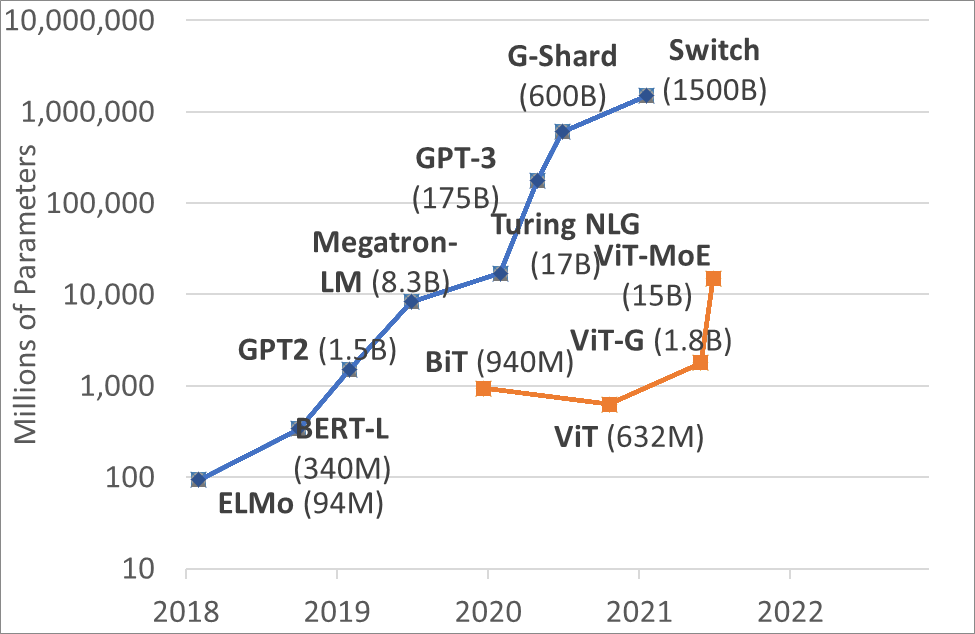

为何Transformer在计算机视觉中如此受欢迎？
转自：为何Transformer在计算机视觉中如此受欢迎？ (msra.cn)
2021-09-24 | 作者：胡瀚
编者按：近一年来，Transformer 在计算机视觉领域所带来的革命性提升，引起了学术界的广泛关注，有越来越多的研究人员投入其中。Transformer 的特点和优势是什么？为什么在计算机领域中 Transformer 可以频频出圈？让我们通过今天的文章来一探究竟吧！
“统一性”是很多学科共同追求的目标，例如在物理学领域，科学家们追求的大统一，就是希望用单独一种理论来解释力与力之间的相互作用。人工智能领域自然也存在着关于“统一性”的目标。在深度学习的浪潮中，人工智能领域已经朝着统一性的目标前进了一大步。比如，一个新的任务基本都会遵循同样的流程对新数据进行预测：收集数据，做标注，定义网络结构，训练网络参数。
但是，在人工智能的不同子领域中，基本建模的方式各种各样，并不统一，例如：在自然语言处理（NLP）领域目前的主导建模网络是 Transformer；计算机视觉（CV）领域很长一段时间的主导网络是卷积神经网络（CNN）；社交网络领域目前的主导网络则是图网络等。
尽管如此，从2020年年底开始，Transformer 还是在 CV 领域中展现了革命性的性能提升。这就表明 CV 和 NLP 有望统一在 Transformer 结构之下。这一趋势对于两个领域的发展来说有很多好处：1）使视觉和语言的联合建模更容易；2）两个领域的建模和学习经验可以深度共享，从而加快各自领域的进展。
1.Transformer在视觉任务中的优异性能
视觉 Transformer 的先驱工作是谷歌在 ICLR 2021 上发表的 ViT [1]，该工作把图像分成多个图像块（例如16x16像素大小），并把这些图像块比作 NLP 中的 token。然后直接将 NLP 中的标准 Transformer 编码器应用于这些 “token”，并据此进行图像分类。该工作结合了海量的预训练数据（如谷歌内部3亿图片分类训练库 JFT-300M），在 ImageNet-1K 的 validation 评测集上取得了88.55%的准确率，刷新了该榜单上的纪录。
ViT 应用 Transformer 比较简单直接，因为其没有仔细考虑视觉信号本身的特点，所以它主要适应于图像分类任务，对于区域级别和像素级别的任务并不是很友好，例如物体检测和语义分割等。为此，学术界展开了大量的改进工作。其中，Swin Transformer 骨干网络 [2] 在物体检测和语义分割任务中大幅刷新了此前的纪录，让学术界更加确信 Transformer 结构将会成为视觉建模的新主流。
具体而言，在物体检测的重要评测集 COCO 上，Swin Transformer 取得了单模型58.7的 box mAP 和51.1的 mask mAP，分别比此前最好的、没有扩充数据的单模型方法高出了+2.7个点和+2.6个点。此后，通过改进检测框架以及更好地利用数据，基于 Swin Transformer 网络的方法性能进一步取得了61.3的 box mAP 和53.0的 mask mAP，累计提升达+5.3 box mAP 和+5.5 mask mAP。在语义分割的重要评测数据集 ADE20K 上，Swin Transformer 也取得了显著的性能提升，达到了53.5 mIoU，比此前最好的方法高出+3.2 mIoU，此后随着分割框架和训练方法的进一步改进，目前已达到57.0 mIoU 的性能。
图1 历年COCO物体检测评测集上的记录
除了在物体检测和语义分割任务上表现亮眼外，基于 Swin Transformer 骨干网络的方法在众多视觉任务中也取得了优异的成绩，如视频动作识别 [3]、视觉自监督学习 [4] [5]、图像复原 [6]、行人 Re-ID [7]、医疗图像分割 [8]等。
Swin Transformer 的主要思想是将具有很强建模能力的 Transformer 结构和重要的视觉信号先验结合起来。这些先验具有层次性（Hierarchy）、局部性（locality）以及平移不变性的特点（translation invariance）。Swin Transformer 的一个重要设计是移位的不重叠窗口（shifted windows），不同于传统的滑动窗，不重叠窗口的设计对硬件实现更加友好，从而具有更快的实际运行速度。如图2（左）所示，在滑动窗口设计中，不同的点采用了不同的邻域窗口来计算相互关系，这种计算对硬件并不友好。而如图2（右）所示，Swin Transformer 使用的不重叠窗口中，统一窗口内的点将采用相同的邻域来进行计算，对速度更友好。实际测试表明，非重叠窗口方法的速度比滑动窗口方法快了2倍左右。在两个连续的层中还做了移位的操作。在 L 层中，窗口分区从图像的左上角开始；在 L+1 层中，窗口划分则往右下移动了半个窗口。这样的设计保证了不重叠的窗口间可以有信息的交换。
图2：传统的滑动窗口方法（左），由于不同的查询所用到的关键字集合不同，其对存储的访问不太友好，实际运行速度较慢。移位的不重叠窗口方法（右），由于不同的查询共享关键字集合，所以实际运行速度更快，从而更实用。
在过去的大半年中，学术界视觉 Transformer 还涌现了大量变种，包括 DeiT [9]，LocalViT [10]，Twins [11]，PvT [12]，T2T-ViT [13], ViL [14]，CvT [15]，CSwin [16]，Focal Transformer [17]，Shuffle Transformer [18] 等。
2.拥抱Transformer的五个理由
除了刷新很多视觉任务的性能纪录以外，视觉 Transformer 还拥有诸多好处。事实上，过去4年间学术界不断挖掘出了 Transformer 建模的各种优点，可以总结为图3所示的五个方面。
图3：过去4年学术界不断挖掘出的 Transformer 建模的五个优点
理由1：通用的建模能力
Transformer 的通用建模能力来自于两个方面：一方面 Transformer 可以看作是一种图建模方法。图是全连接的，节点之间的关系通过数据驱动的方式来学习得到。由于任意概念（无论具体或抽象）都可以用图中的节点来表示，且概念之间的关系可以用图上的边来刻画，因此 Transformer 建模具有很强的通用性。
另一方面，Transformer 通过验证的哲学来建立图节点之间的关系，具有较好的通用性：无论节点多么异构，它们之间的关系都可以通过投影到一个可以比较的空间里计算相似度来建立。如图4（右）所示，节点可以是不同尺度的图像块，也可以是“运动员”的文本输入，Transformer 均可以刻画这些异构节点之间的关系。
图4：促成 Transformer 通用建模能力的两大原因：图建模（左）和验证哲学（右）
正是因为具备这样的通用建模能力，Transformer 中的注意力单元可以被应用到各种各样的视觉任务中。具体而言，计算机视觉处理的对象主要涉及两个层次的基本元素：像素和物体。而计算机视觉所涉及到的任务主要就囊括了这些基本元素之间的关系，包括像素-像素，物体-像素和物体-物体的关系建模。此前，前两种关系建模主要是分别由卷积和 RoIAlign 来实现的，最后一种关系通常没有很好的建模方法。但是，Transformer 中的注意力单元因其通用的建模能力，可以被应用到所有这些基本关系的建模中。
近些年，在这个领域中已经出现了很多代表性的工作，例如：1） 非局部网络 [19]。王小龙等人将注意力单元用于建模像素-像素的关系，证明了 Transformer 可以帮助视频动作分类和物体检测等任务。元玉慧等人将其应用于语义分割问题，也取得了显著的性能提升[20]。2）物体关系网络 [21]。注意力单元用于物体检测中的物体关系建模，这一模块也被广泛应用于视频物体分析中 [22, 23, 24]。3）物体和像素的关系建模，典型的工作包括 DETR [25]，LearnRegionFeat [26]，以及 RelationNet++ [27]等。
图5：Transformer 能被应用于各种视觉基本元素之间的关系建模，包括像素-像素（左），物体-像素（中），物体-物体（右）
理由2：和卷积形成互补
卷积是一种局部操作，一个卷积层通常只会建模邻域像素之间的关系。Transformer 则是全局操作，一个 Transformer 层能建模所有像素之间的关系，双方可以很好地进行互补。最早将这种互补性联系起来的是非局部网络 [19]，在这个工作中，少量 Transformer 自注意单元被插入到了原始网络的几个地方，作为卷积网络的补充，并被证明其在物体检测、语义分割和视频动作识别等问题中广泛有效。
此后，也有工作发现非局部网络在视觉中很难真正学到像素和像素之间的二阶关系 [28]，为此，有研究员们也提出了一些针对这一模型的改进，例如解耦非局部网络 [29]。
理由3：更强的建模能力
卷积可以看作是一种模板匹配，图像中不同位置采用相同的模板进行滤波。而 Transformer 中的注意力单元则是一种自适应滤波，模板权重由两个像素的可组合性来决定，这种自适应计算模块具有更强的建模能力。
最早将 Transformer 这样一种自适应计算模块应用于视觉骨干网络建模的方法是局部关系网络 LR-Net [30] 和 SASA [31]，它们都将自注意的计算限制在一个局部的滑动窗口内，在相同理论计算复杂度的情况下取得了相比于 ResNet 更好的性能。然而，虽然理论上与 ResNet 的计算复杂度相同，但在实际使用中它们却要慢得多。一个主要原因是不同的查询（query）使用不同的关键字（key）集合，如图2（左）所示，对内存访问不太友好。
Swin Transformer 提出了一种新的局部窗口设计——移位窗口（shifted windows）。这一局部窗口方法将图像划分成不重叠的窗口，这样在同一个窗口内部，不同查询使用的关键字集合将是相同的，进而可以拥有更好的实际计算速度。在下一层中，窗口的配置会往右下移动半个窗口，从而构造了前一层中不同窗口像素间的联系。
理由4：对大模型和大数据的可扩展性
在 NLP 领域，Transformer 模型在大模型和大数据方面展示了强大的可扩展性。图6中，蓝色曲线显示近年来 NLP 的模型大小迅速增加。大家都见证了大模型的惊人能力，例如微软的 Turing 模型、谷歌的 T5 模型以及 OpenAI 的 GPT-3 模型。
视觉 Transformer 的出现为视觉模型的扩大提供了重要的基础，目前最大的视觉模型是谷歌的150亿参数 ViT-MoE 模型 [32]，这些大模型在 ImageNet-1K 分类上刷新了新的纪录。

图6：NLP 领域和计算机视觉领域模型大小的变迁
理由5：更好地连接视觉和语言
在以前的视觉问题中，科研人员通常只会处理几十类或几百类物体类别。例如 COCO 检测任务中包含了80个物体类别，而 ADE20K 语义分割任务包含了150个类别。视觉 Transformer 模型的发明和发展，使视觉领域和 NLP 领域的模型趋同，有利于联合视觉和 NLP 建模，从而将视觉任务与其所有概念联系起来。这方面的先驱性工作主要有 OpenAI 的 CLIP [33] 和 DALL-E 模型 [34]。
考虑到上述的诸多优点，相信视觉 Transformer 将开启计算机视觉建模的新时代，我们也期待学术界和产业界共同努力，进一步挖掘和探索这一新的建模方法给视觉领域带来的全新机遇和挑战。
参考文献
[1] Alexey Dosovitskiy, Lucas Beyer, Alexander Kolesnikov, Dirk Weissenborn, Xiaohua Zhai, Thomas Unterthiner, Mostafa Dehghani, Matthias Minderer, Georg Heigold, Sylvain Gelly, Jakob Uszkoreit, Neil Houlsby. An Image is Worth 16x16 Words: Transformers for Image Recognition at Scale. ICLR 2021
[2] Ze Liu, Yutong Lin, Yue Cao, Han Hu, Yixuan Wei, Zheng Zhang, Stephen Lin, Baining Guo. Swin Transformer: Hierarchical Vision Transformer using Shifted Windows. ICCV 2021
[3] Ze Liu, Jia Ning, Yue Cao, Yixuan Wei, Zheng Zhang, Stephen Lin, Han Hu. Video Swin Transformer. Tech report 2021
[4] Zhenda Xie, Yutong Lin, Zhuliang Yao, Zheng Zhang, Qi Dai, Yue Cao, Han Hu. Self-Supervised Learning with Swin Transformers. Tech report 2021
[5] Chunyuan Li, Jianwei Yang, Pengchuan Zhang, Mei Gao, Bin Xiao, Xiyang Dai, Lu Yuan, Jianfeng Gao. Efficient Self-supervised Vision Transformers for Representation Learning. Tech report 2021
[6] Jingyun Liang, Jiezhang Cao, Guolei Sun, Kai Zhang, Luc Van Gool, Radu Timofte. SwinIR: Image Restoration Using Swin Transformer. Tech report 2021
[7] https://github.com/layumi/Person_reID_baseline_pytorch
[8] Hu Cao, Yueyue Wang, Joy Chen, Dongsheng Jiang, Xiaopeng Zhang, Qi Tian, Manning Wang. Swin-Unet: Unet-like Pure Transformer for Medical Image Segmentation. Tech report 2021
[9] Hugo Touvron, Matthieu Cord, Matthijs Douze, Francisco Massa, Alexandre Sablayrolles, Hervé Jégou. Training data-efficient image transformers & distillation through attention. Tech report 2021
[10] Yawei Li, Kai Zhang, Jiezhang Cao, Radu Timofte, Luc Van Gool. LocalViT: Bringing Locality to Vision Transformers. Tech report 2021
[11] Xiangxiang Chu, Zhi Tian, Yuqing Wang, Bo Zhang, Haibing Ren, Xiaolin Wei, Huaxia Xia, Chunhua Shen. Twins: Revisiting the Design of Spatial Attention in Vision Transformers. Tech report 2021
[12] Wenhai Wang, Enze Xie, Xiang Li, Deng-Ping Fan, Kaitao Song, Ding Liang, Tong Lu, Ping Luo, Ling Shao. Pyramid Vision Transformer: A Versatile Backbone for Dense Prediction without Convolutions. ICCV 2021
[13] Li Yuan, Yunpeng Chen, Tao Wang, Weihao Yu, Yujun Shi, Zihang Jiang, Francis EH Tay, Jiashi Feng, Shuicheng Yan. Tokens-to-Token ViT: Training Vision Transformers from Scratch on ImageNet. Tech report 2021
[14] Pengchuan Zhang, Xiyang Dai, Jianwei Yang, Bin Xiao, Lu Yuan, Lei Zhang, Jianfeng Gao. Multi-Scale Vision Longformer: A New Vision Transformer for High-Resolution Image Encoding. Tech report 2021
[15] Haiping Wu, Bin Xiao, Noel Codella, Mengchen Liu, Xiyang Dai, Lu Yuan, Lei Zhang. CvT: Introducing Convolutions to Vision Transformers. ICCV 2021
[16] Xiaoyi Dong, Jianmin Bao, Dongdong Chen, Weiming Zhang, Nenghai Yu, Lu Yuan, Dong Chen, Baining Guo. CSWin Transformer: A General Vision Transformer Backbone with Cross-Shaped Windows. Tech report 2021
[17] Jianwei Yang, Chunyuan Li, Pengchuan Zhang, Xiyang Dai, Bin Xiao, Lu Yuan, Jianfeng Gao. Focal Self-attention for Local-Global Interactions in Vision Transformers. Tech report 2021
[18] Zilong Huang, Youcheng Ben, Guozhong Luo, Pei Cheng, Gang Yu, Bin Fu. Shuffle Transformer: Rethinking Spatial Shuffle for Vision Transformer. Tech report 2021
[19] Xiaolong Wang, Ross Girshick, Abhinav Gupta, Kaiming He. Non-local Neural Networks. CVPR 2018
[20] Yuhui Yuan, Lang Huang, Jianyuan Guo, Chao Zhang, Xilin Chen, Jingdong Wang. OCNet: Object Context for Semantic Segmentation. IJCV 2021
[21] Han Hu, Jiayuan Gu, Zheng Zhang, Jifeng Dai, Yichen Wei. Relation Networks for Object Detection. CVPR 2018
[22] Jiarui Xu, Yue Cao, Zheng Zhang, Han Hu. Spatial-Temporal Relation Networks for Multi-Object Tracking. ICCV 2019
[23] Yihong Chen, Yue Cao, Han Hu, Liwei Wang. Memory Enhanced Global-Local Aggregation for Video Object Detection. CVPR 2020
[24] Jiajun Deng, Yingwei Pan, Ting Yao, Wengang Zhou, Houqiang Li, and Tao Mei. Relation distillation networks for video object detection. ICCV 2019
[25] Nicolas Carion, Francisco Massa, Gabriel Synnaeve, Nicolas Usunier, Alexander Kirillov, Sergey Zagoruyko. End-to-End Object Detection with Transformers. ECCV 2020
[26] Jiayuan Gu, Han Hu, Liwei Wang, Yichen Wei, Jifeng Dai. Learning Region Features for Object Detection. ECCV 2018
[27] Cheng Chi, Fangyun Wei, Han Hu. RelationNet++: Bridging Visual Representations for Object Detection via Transformer Decoder. NeurIPS 2020
[28] Yue Cao, Jiarui Xu, Stephen Lin, Fangyun Wei, Han Hu. GCNet: Non-local Networks Meet Squeeze-Excitation Networks and Beyond. ICCV workshop 2019
[29] Minghao Yin, Zhuliang Yao, Yue Cao, Xiu Li, Zheng Zhang, Stephen Lin, Han Hu. Disentangled Non-Local Neural Networks. ECCV 2020
[30] Han Hu, Zheng Zhang, Zhenda Xie, Stephen Lin. Local Relation Networks for Image Recognition. ICCV 2019
[31] Prajit Ramachandran, Niki Parmar, Ashish Vaswani, Irwan Bello, Anselm Levskaya, Jonathon Shlens. Stand-Alone Self-Attention in Vision Models. NeurIPS 2019
[32] Carlos Riquelme, Joan Puigcerver, Basil Mustafa, Maxim Neumann, Rodolphe Jenatton, André Susano Pinto, Daniel Keysers, Neil Houlsby. Scaling Vision with Sparse Mixture of Experts. Tech report 2021
[33] Alec Radford, Jong Wook Kim, Chris Hallacy, Aditya Ramesh, Gabriel Goh, Sandhini Agarwal, Girish Sastry, Amanda Askell, Pamela Mishkin, Jack Clark, Gretchen Krueger, Ilya Sutskever. Learning Transferable Visual Models from Natural Language Supervision. Tech report 2021
[34] Aditya Ramesh, Mikhail Pavlov, Gabriel Goh, Scott Gray, Chelsea Voss, Alec Radford, Mark Chen, Ilya Sutskever. Zero-Shot Text-to-Image Generation. Tech report 2021